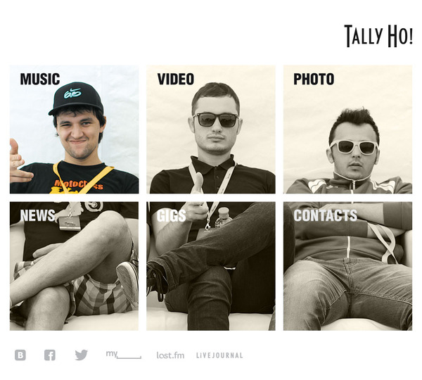

Skills
Main skills:
The main part of my time I work with PHP, HTML, CSS, Javascript (JQuery).
Additional skills:
Also I got an experience in developing with Microsoft SQL Server, MySQL, PostgreSQL, C#
Objectives
The one of the main objectives is to become a part of high skilled team of developers. I want to grow up as a developer and work on interesting projects.
Work Experience
Jun 2015 - Sep 2015
RuSoft
Software Engineer
Remote job in Moscow web studio. Work on some comersial progects.
http://rusoft.ru/ru/portfolio/sites
March 2013 — Jun 2015
OJSC «Gazprom Gazoraspredeleniye Belgorod», Belgorod.
Senior Software Engineer
Development services for corporate intranet website based on 1C Bitrix API and its support.
February 2011 — March 2013 (2 years 2 months)
Belgorod State University, Belgorod.
Programmer
Development and support internal University management system based on Microsoft .Net Framework 3.5. Development of an electronic submission of applications for students. Microsoft SQL Server Administration.
April 2010 — February 2011 (11 months)
SV-Service, Belgorod.
Programmer
Development of web applications and web sites. Databases optimization and development.
November 2006 — April 2010 (3 years 6 months)
Belgorod State University, Belgorod.
Technical Support
Computer classroom maintenance
Projects
Phonebook for OAO «Gazprom Gazoraspredeleniye Belgorod».
Data is taken asynchronously for this page from php script. The backend is made with 1C Bitrix framework. The frontend is based on Mustache.js templates and JQuery ajax. Service is under construction yet.
Performance indicators of the business process.
Data is taken asynchronously for this page from php script. The backend is made with 1C Bitrix framework. Plots are made with flot.js and customized JQuery plugin aToolTip.
Customer testing service.
Made a new component for 1C Bitrix.
Tally Ho! band website.

Website based Drupal 7 CMS
Electronic submission of applications for students.
The backend of the system is based on Microsoft WCF REST Service.
The frontend is based on Mustache.js templates and JQuery ajax.
"North-Caucasian Transmissions" and its filial "Belgorod automatic transmission" websites in association with Studio-yes.
Website based Drupal 7 CMS
Chocolate gifts website in association with Studio-yes.
Website has a CMS of my production.
Wunderkind Company's website in association with Studio-yes
Website based Joomla CMS
Interests
I love to work with interesting web projects. The last couple months I became interested in functional programming and functional aspect of javascript especially. I saw another side of this. Sometimes I spend my time to administrate my tiny Raspberry Pi computer. Beside coding I love music. I play bass guitar in the local band.